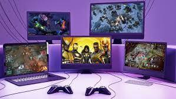

A computer game is an electronic game that involves interaction with a user interface or input device (such as a joystick, controller, keyboard, or motion sensing device) to generate visual feedback from a display device, most commonly shown in a video format on a television set, computer monitor, flat-panel display or touchscreen on handheld devices, or a virtual reality headset.
Whether they’re minions, spells, quests, or heroes, Hearthstone’s cards can dramatically change the game with powerful effects and crazy interactions.
